상태 한 줄이 사용량을 먹는 구조
서브에이전트를 백그라운드로 돌리면 Claude Code 화면 아래에 에이전트 목록이 생겨요. 아래 화면에서 main 밑의 general-purpose 줄 오른쪽, 주황색으로 칠해진 Waiting through fifth 20-second sleep이 그 에이전트가 지금 하는 일을 몇 단어로 적은 상태 줄이에요. 영상이 문제 삼는 건 바로 이 한 줄이에요.
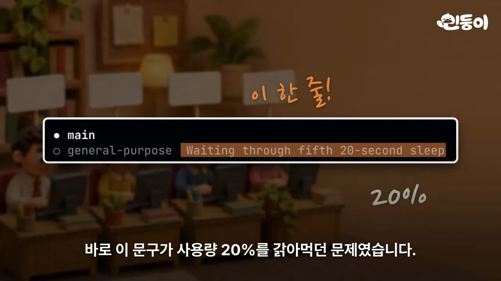
Claude Code는 이 문구를 만들려고 30초마다 그 에이전트가 지금까지 나눈 대화를 처음부터 끝까지 모델에 다시 넣어요. 영상의 비유로는 책 한 권을 다 읽혀 놓고 "그래서 지금 몇 쪽이야?"라고 묻는 일을 30초마다 되풀이하는 셈이에요. 내부 이름은 agent_summary예요.
Flamerix가 잰 숫자
Flamerix AI(Artificial Intelligence)가 일주일치 사용 기록을 용도별로 나눠 봤어요. 표 첫 줄이 핵심이에요. 상태 줄(agent_summary)이 Claude Code 전체 비용의 16.4%였고, 사람이 Claude와 직접 나눈 본 대화(main conversation)는 15.7%였어요. 둘째 줄부터는 요청 수로 19.7%(약 5번에 1번), 그 비용의 96%가 Opus, 입력 토큰 대 출력 토큰이 약 9,000 대 1이라는 숫자예요. 오른쪽 '2 days after' 칸은 Flamerix가 끄는 스크립트를 쓴 뒤 0%가 된 결과예요.
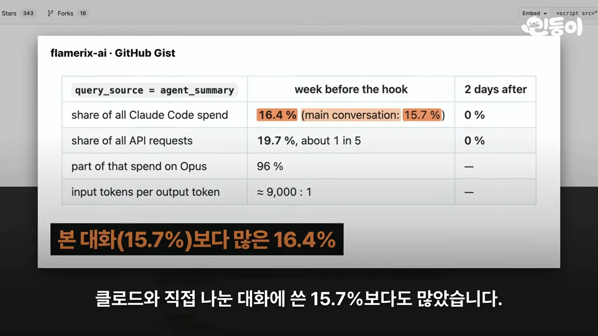
Better Stack이 직접 재 본 결과
개발 도구 회사 Better Stack도 에이전트에게 간단한 일을 시켜 놓고 요청을 지켜봤어요. 아래 텔레메트리 화면에서 agent_summary 요청이 줄줄이 찍히고, 오른쪽 간격 표시가 +32.5초, +31.8초, +32.0초, +31.5초예요. 정말 약 30초마다 요약 요청이 나간 거예요.
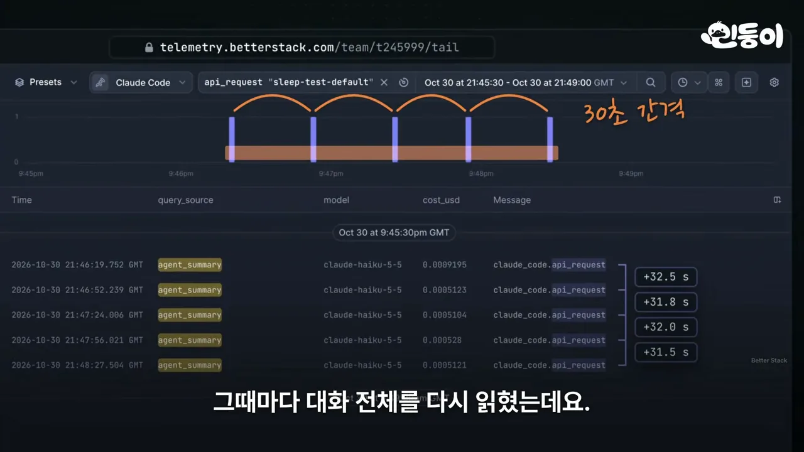
요청 하나를 열어 보면 들어간 양과 나온 양의 차이가 커요. 위 막대가 모델에 넣은 40,800 토큰, 아래 막대가 돌려받은 130 토큰이에요. 몇 단어를 받으려고 300배가 넘는 양을 읽힌 거죠.
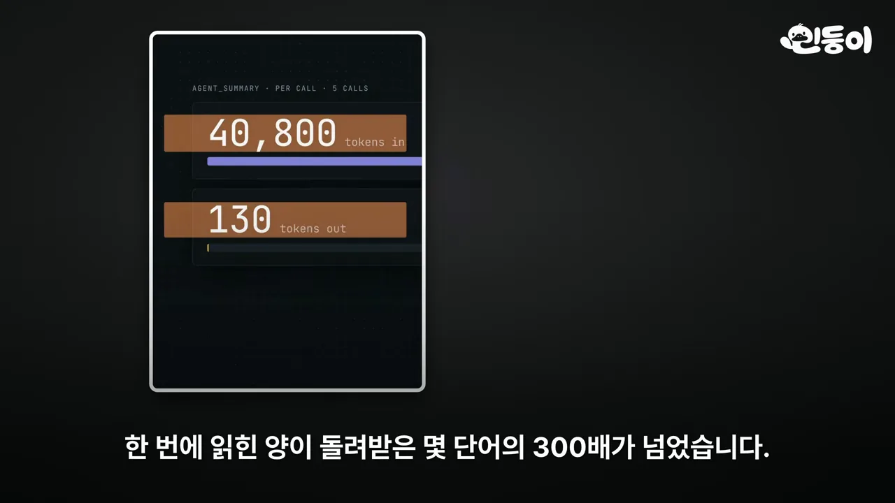
Better Stack 측정에서 상태 줄 비용은 이 간단한 테스트에서 전체의 12%, Opus로 실제 웹사이트를 만들게 한 테스트에서 8%였어요. 요약은 지금 쓰는 모델을 그대로 따라가서, Opus를 쓰면 요약도 비싼 Opus가 해요. 그래서 에이전트를 많이, 오래 돌릴수록 커져요. 서브에이전트 40개를 돌린 한 사용자는 24%까지 나왔다고 해요. 아래 화면은 그 사용자가 GitHub 이슈에 남긴 댓글이에요.
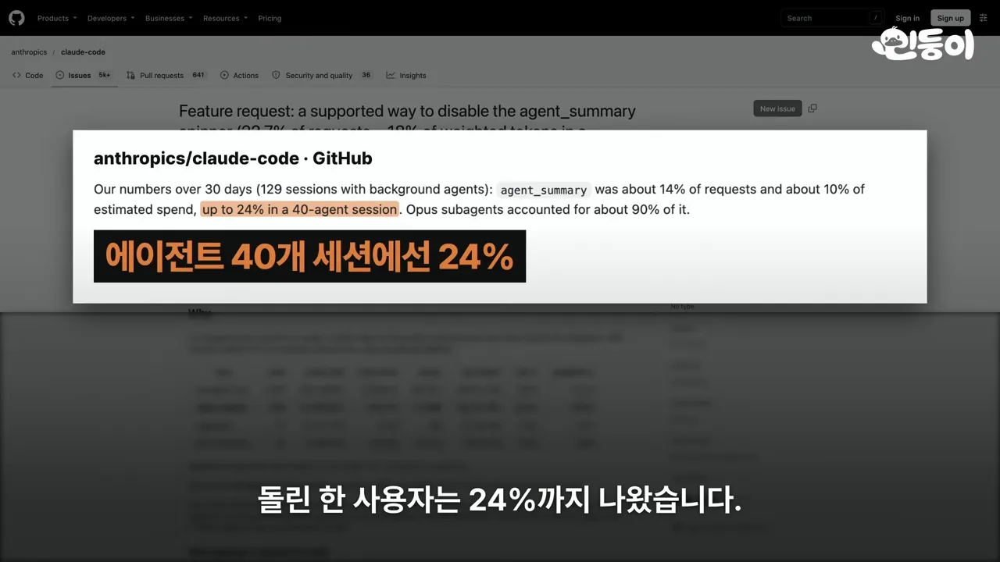
영상에 나온 측정값을 한 그림에 모으면 이래요. 같은 문제라도 에이전트 수와 모델에 따라 8%에서 24%까지 벌어져요.
왜 아무도 몰랐고, Anthropic은 뭐라 했나
이만큼 큰 비용을 몇 달 동안 아무도 못 본 이유는 기록에 있어요. Claude Code는 나눈 대화를 기록 파일로 남기고, 사용량을 보여 주는 도구들은 이 파일을 읽어서 계산해요. 아래 그림의 위쪽 화살표가 그 흐름이에요. 그런데 점선으로 빠져나간 요약 요청은 '기록 밖'에 있어서 사용량 도구에 닿지 않아요.
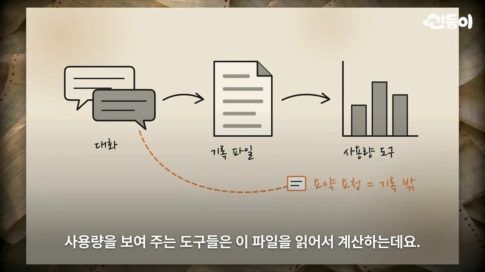
실제로 비교한 화면도 나와요. 왼쪽 터미널은 ~/.claude/projects/ 아래 세션 기록 파일들이고, 오른쪽은 같은 시간 Better Stack에 찍힌 실제 요청 목록이에요. 왼쪽 위에는 12 responses, 오른쪽 위에는 20 requests라고 적혀 있어요. 손글씨대로 기록엔 12번인데 실제론 20번 나간 거예요.
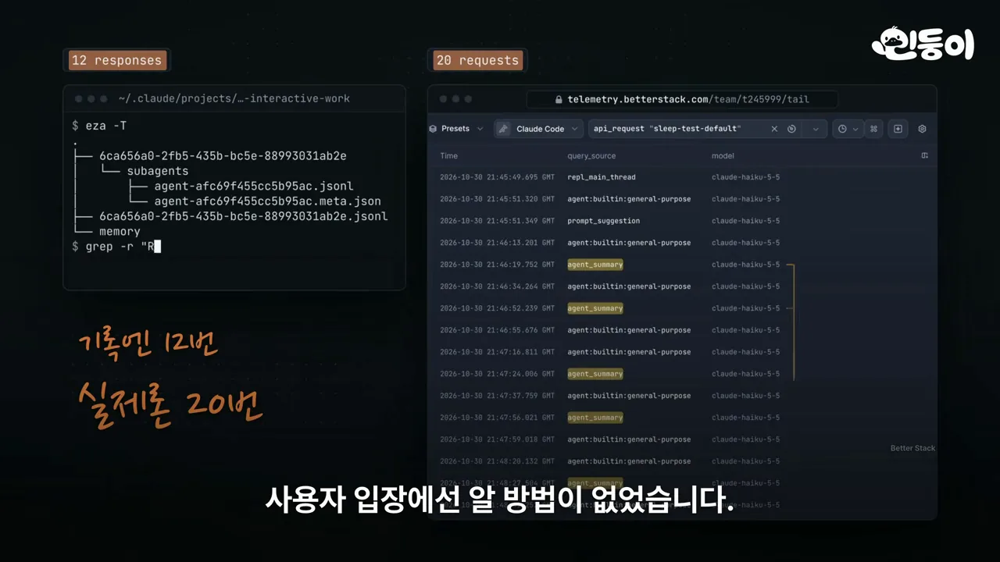
그래서 사용자 입장에선 알 방법이 없었어요. Flamerix가 OpenTelemetry로 내보낸 요청을 하나하나 용도별로 묶어 보고서야 드러났어요.
Anthropic의 반응
사실 같은 문제는 8월 15일에 이미 GitHub 이슈로 올라왔어요. 제목은 '상태 줄(agent_summary spinner)을 끄는 공식 방법을 달라'이고, 서브에이전트가 많은 세션에서 요청의 22.7%, 가중 토큰의 약 18%라는 숫자가 붙어 있어요. 화면 아래쪽 메모대로 Anthropic은 답하지 않았어요.
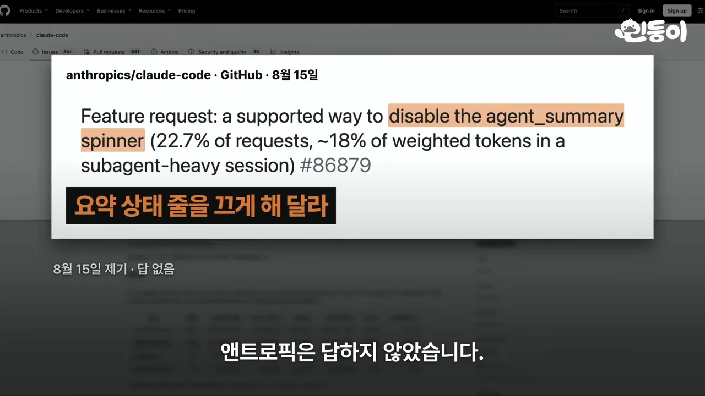
10월 말 Claude 한도가 너무 빨리 닳는다는 불만이 쏟아지자, 영상에 따르면 Claude Code 책임자 Boris Cherny는 에이전트를 잔뜩 돌린 무거운 세션 탓이라고 답했어요. 그런데 같은 날 Flamerix 분석이 Hacker News 1면에 오르자, Claude Code 개발팀이 댓글로 인정했어요. 아래 화면에서 강조된 부분이 'we agree that's a lot for a status line', 상태 줄 하나에 너무 많다는 데 동의한다는 문장이에요.
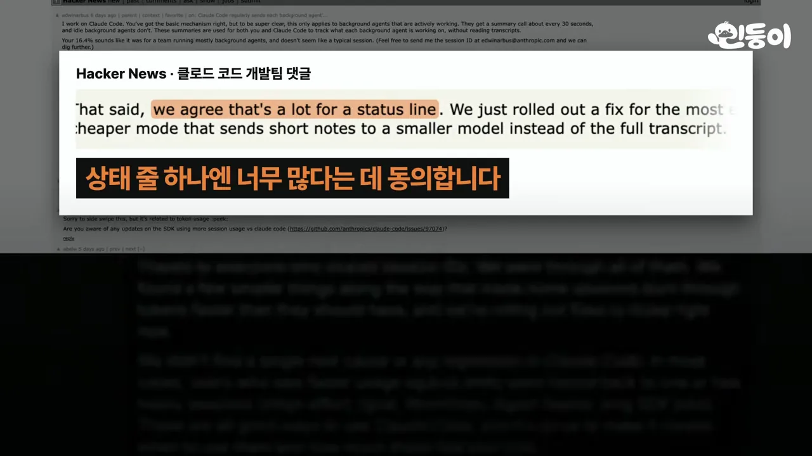
그 뒤 Anthropic이 고친 건 하나예요. 요약이 가끔 대화를 처음부터 새로 읽느라 유독 비싸지던 오류예요. 더 작은 모델로 짧게 요약하는 방식은 아직 만드는 중이라고 했어요. 그래서 지금도 30초마다 대화 전체를 다시 읽히는 구조는 그대로예요.
지금 끄는 두 가지 방법
요약을 끄는 공식 설정은 아직 없어요. 영상은 대신 쓸 수 있는 방법 두 가지를 소개해요.
방법 1. settings.json에 한 줄 넣기
Claude Code 설정 파일 ~/.claude/settings.json의 env 칸에 CLAUDE_CODE_FORK_SUBAGENT를 넣고 값을 "0"으로 적어요. 화면에 나온 그대로 옮기면 이래요.
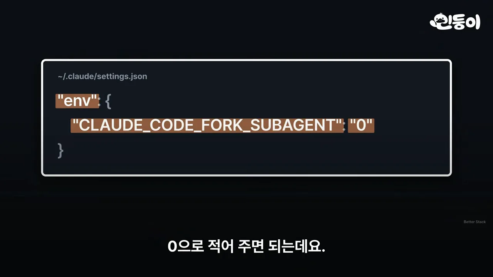
{
"env": {
"CLAUDE_CODE_FORK_SUBAGENT": "0"
}
}Better Stack이 이렇게 해 두고 두 테스트를 다시 돌렸어요. 왼쪽 Sleep test(Haiku 5.5, 에이전트 1개)는 요약 호출이 5번에서 0번, 오른쪽 TanStack test(Opus 5.5, 에이전트 3개)는 15번에서 0번이 됐어요. 아래 터미널을 보면 에이전트는 평소처럼 일을 끝냈어요.
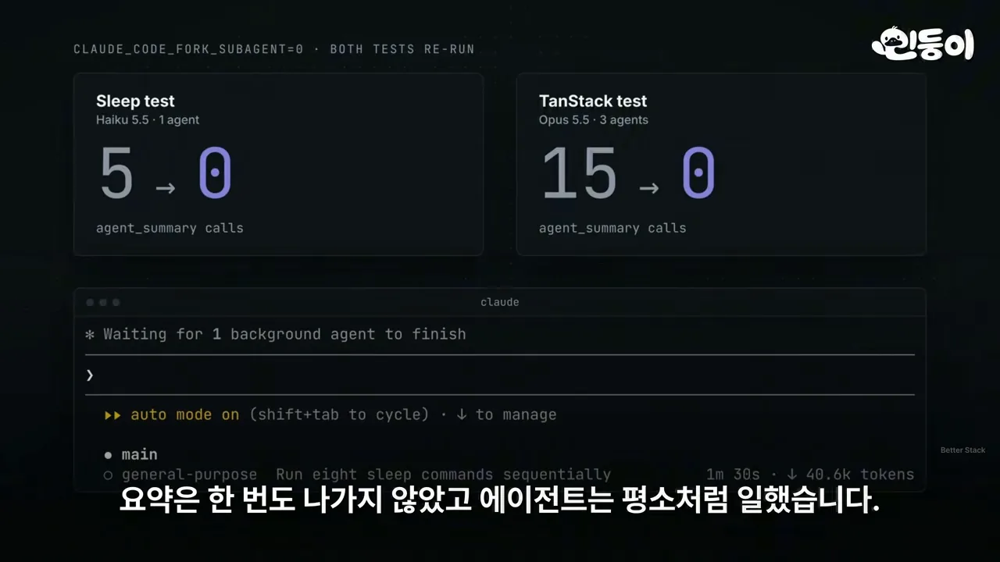
대가도 있어요. 이 설정은 포크라는 기능을 끄는 거예요. 포크가 켜져 있으면 Claude가 에이전트에게 일을 넘길 때 지금까지의 대화를 통째로 같이 넘겨요. 아래 그림에서 왼쪽 main이 내 대화, 오른쪽 위에 줄 그어진 fork가 꺼진 포크예요. 포크를 끄면 오른쪽 아래 subagent처럼 대화 없이 빈 상태로 맡은 일만 듣고 시작해요.
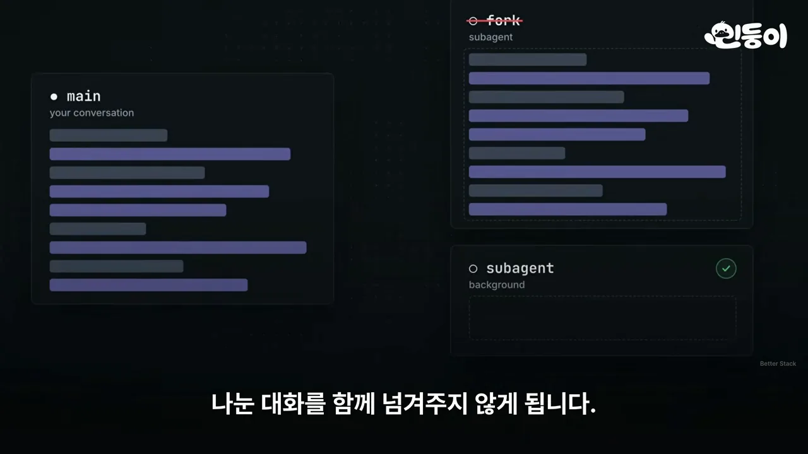
그래서 앞에서 정한 내용이 중요한 작업이라면, 에이전트에게 일을 맡길 때 설명을 조금 더 붙여 주는 게 좋아요.
방법 2. Flamerix 스크립트
두 번째는 Flamerix가 공개한 스크립트예요. Claude Code가 켜질 때 함께 실행돼서, 30초마다 울리는 요약 알람만 꺼요. 화면의 Gist에는 스크립트 파일을 받는 curl 명령과, BUN_OPTIONS에 프리로드(--preload) 옵션으로 그 파일을 걸고 claude를 실행하는 줄이 강조돼 있어요.
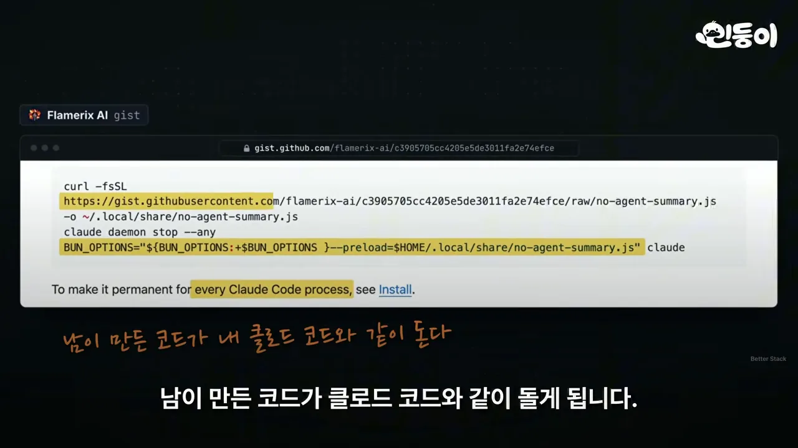
그래서 쓴다면 내용을 먼저 읽어 보고, 받은 파일을 내 컴퓨터에 저장해서 쓰는 게 안전하다고 영상은 권해요.
두 방법을 나란히 놓으면 이래요.
| settings.json 한 줄 | Flamerix 스크립트 | |
|---|---|---|
| 하는 일 | 포크 기능을 끔 | 요약 알람만 끔 |
| 포크 | 못 써요 | 그대로 써요 |
| 잃는 것 | 에이전트가 앞 대화를 모르고 시작해요 | 남이 만든 코드가 Claude Code와 같이 돌아요 |
| 영상의 조언 | 중요한 작업이면 설명을 더 붙이기 | 내용을 읽고, 파일을 받아 저장해서 쓰기 |
영상은 에이전트를 평소 여러 개 쓰는 사람이라면 참고할 만하다는 말로 끝나요.